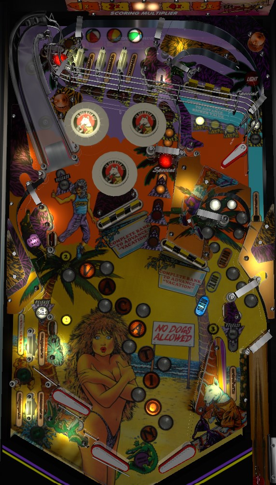

Game settings mean that you may start with multiball for free or need to earn it yourself. Hit the 1-2-3 standup targets in the lower half of the playfield to light a Release, then shoot the left ramp or right in lane when lit to add 1 ball to the playfield or shoot the left in lane when lit to jump straight to 4-ball multiball. Switch hits increase a playfield multiplier to up to 5x; bumpers get you there fastest. Complete main playfield drop target 3-banks to earn Vacation letters (50,000 of bonus each, light extra ball when Vacation completed). Top lanes light bumpers for 10,000 times playfield X, which is big value.
Spring Break does not have any manual ball shooter. Instead, at the beginning of your turn, press the right flipper to launch a ball; it will go around the loop in the middle right before falling to the right flipper. The skill shot is a timed press of the flipper launch button; you get 10,000, 20,000, or 100,000 points based on which light is lit when you press the right flipper.
Spring Break has two modes of play: standard rules and free multiball rules. In standard rules, you start with just one ball in play, like most pinball games. In free multiball rules, you instantly get a multiball at the start of each turn. In a 3-ball game, your turn will start with a 2, 3, or 4 ball multiball in that order; in a 5-ball game, your turn will start with a 2, 2, 3, 3, or 4 ball multiball, in that order. Under free multiball rules, you receive the value of the skill shot with each plunged ball, making the skill shot more important in general and also increasingly more valuable as the game goes on.
The middle right loop can be shot during gameplay as well; the 10,000 - 20,000 - 100,000 lights continue to strobe during gameplay, and triggering the rollunder switch within the loop scores whichever value is lit.
3 standup targets in the lower half of the playfield govern the ability to add more balls to the playfield. #1 is just above the upper left flipper; #2 is in the middle left by the extra ball lane; #3 is directly above the right in lane, facing left. Hit a lit target to unlight it. Unlight all 3 targets to light one of the Release points, which can be at the left ramp, left in lane, or right in lane. Pop bumpers and slingshots rotate which release point is lit. Making the left ramp or right in lane when lit adds 1 ball to the playfield. Making the left in lane when lit plunges all of the balls in the game, instantly starting 4-ball multiball. There is no reward for trying to add more balls when all 4 are already in play. There are no additional scoring opportunities or rules during multiball; just more balls on the playfield that can be used to raise the playfield multiplier, complete drop target banks, etc.
Every switch in the game adds to the playfield multiplier timer. Every 3 switch hits or so, the playfield multiplier raises by 1x, up to a maximum of 5x. However, as indicated by stars * on the alphanumeric display, this multiplier is timed and counts down quickly, so you need to hit more switches quickly to keep its value up. It's pretty difficult to have a net positive impact on the playfield multiplier timer by shooting for anything other than pop bumpers; use the left ramp or a full shot up the center lane to reach the top lanes and try to get one or more balls stuck in the bumpers for a while to get your multiplier up to 5x. Even this is short lived, though, as it takes less than 15 seconds for a 5x playfield to count all the way back down to 1x. Score values listed in this guide assume a base playfield multiplier of 1x is in play.
The left ramp drops the ball in the mini-playfield in the upper right. There are 3 drop targets and a loop shot. The goal is to complete the drop targets in order from left to right as much as possible; the flashing insert indicates which target is needed next. The bank only resets once all three targets are knocked down or once an in-order sequence is completed, so if you hit a target out of order, you will likely need to complete the bank again in full to have a chance at the currently flashing target. Each completion of the upper drop targets in order advances the value of the kicker lane that the ball settles into once it drains out of the mini-playfield, which scores in the sequence 10,000 - 20,000 - 100,000 - 100,000 and light special. Special is scored by making a full shot to the main playfield's center lane that loops all the way around to the top lanes. The mini-playfield kicker also drops the ball in the top lanes. The loop shot in the mini-playfield is one of the two places that can be lit for extra ball by completing the word Vacation, which is described below.
Lit top lanes score 5,000 points. Unlit top lanes score 1,000. Roll through a lit top lane to unlight it. Lane change is available with the right flipper only, allowing the lit lanes to be rotated to make completing them easier. Unlighting all 3 top lanes lights one pop bumper and resets the top lanes. Bumpers score 500 points when not lit, or 10,000 when lit. Getting the ball stuck in a nest of lit pop bumpers is extremely valuable, because not only is 10,000 points per bumper a lot on its own, but the bumpers are the fastest way to build the playfield multiplier, and the playfield multiplier in turn applies to the value of the bumpers- it's not unheard of to get 500,000 to 1,000,000 points or more in a single trip to the pops once 2 or 3 of them are lit, which is massive in a game where no other single shot scores more than 100,000 points.
Each drop target down in the two 3-banks in the center of the main playfield scores 1,000 points. Completing either 3-bank awards a letter in Vacation. Each letter in Vacation is worth 50,000 points in end of ball bonus, which cannot be multiplied. Letters in Vacation cannot be held over from ball to ball. Completing the word Vacation lights an extra ball that alternates between the middle left side lane and the mini-playfield loop shot based on various switch hits. Completions of the word Vacation are not held in memory for the purpose of end of ball bonus, so if you do spell Vacation in its entirety, the bonus does reset from 350,000 points back to 0 when the sequence resets.
On the left, the table bottom comes in two tiers. There is an upper left out lane and a left in lane. The left in lane scores 1,000 points and can be lit for Release All Balls after completing 1-2-3. The upper left out lane just stands to feed the two lower left out lanes. Both lower left out lanes score 10,000 points. After 1-2-3 is completed, but before a ball is released to the playfield, the two lower left out lanes alternate being lit for Last Chance. Draining down the out lane lit for Last Chance will return 1 ball to the playfield, allowing you to continue playing and keep your turn. The left in lane feeds the upper left flipper. Balls cannot be drained between the upper left and lower left flippers. The right side of the table bottom is conventional with the exception of the lack of an out lane; just one flipper, one slingshot, and one in lane. The right in lane scores 1,000 points and can be lit to release 1 ball to the playfield after completing 1-2-3.
In competition/novelty play, extra balls and specials score 500,000 points each. If extra ball is not set to award points, there is a maximum of one extra ball per ball in play.